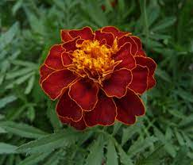
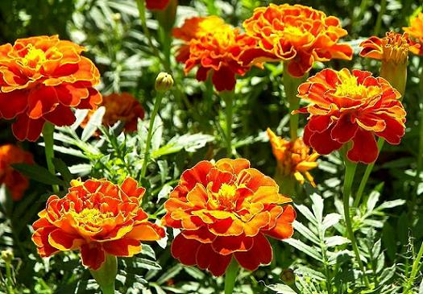

До Європи чорнобривці потрапили після відкриття Колумбом Америки. Тож оспівані в народних піснях квіти українськими ніяк не назвеш. На батьківщині, в Мексиці, чорнобривці називають “семпасучіль2. У перекладі з мови нахауатль (найпоширеніша індіанська мова на території Мексики, близько двох мільйонів носіїв) означає “квітка з двадцятьма пелюстками”. Легенда розповідає про молоду закохану пару ацтеків. Щодня по обіді вони підіймалися на гору неподалік селища, де жили, аби принести богові сонця Тонатіу у дарунок квіти. Він з'являвся, усміхаючись їм з висоти, а вони обіцяли любити одне одного навіть після смерті. Коли на землі ацтеків прийшла війна, закоханим довелось розлучитись. Дізнавшись про смерть милого, дівчина востаннє піднялася на гору і там благала бога Тонатіу, аби той назавжди об'єднав її з коханим. Бог Сонця огорнув згорьовану гарячими променями і перетворив її на квітку з пелюстками настільки ж гарячого та яскравого кольору, як сонячне проміння. За мить до чарівної квітки підлетіла колібрі, це і був юнак, який став птахом. Квітка розкрилася, розгорнула свої 20 пелюстків і наповнила світ навколо містичним та чарівним ароматом. Так на світі з'явилася sempasúchil… Звісно, зараз чорнобривці мають і більше пелюсток, селекціонери постійно виводять нові сорти. Існують десятки видів кольорів і відтінків, відрізняється форма бутона, висота рослини. Що незмінне — так це аромат.
Чорнобривці широко застосовують у боротьбі з такими відомими шкідниками, як попелиця, капустянка, нематода, яка паразитує на суниці і картоплі. Для цього квіти розсаджують на овочевих грядках, або висівають цілими рядками впереміж із городніми культурами. Чорнобривці знезаражують ґрунт від грибів, що викликають фузаріоз. Не люблять запах цих квітів клопи, попелиці, блішки. Також їх запах не подобається колорадському жукові. Обсадивши грядки з культурними рослинами чорнобривцями, ви не тільки прикрасите город, а й захистите його.
Чорнобривці ‒ надійні охоронці від шкідників троянд, флоксів, гладіолусів, капусти, помідорів, перців, у тому числі відлякують нематод, зокрема на цибулі-порею, моркві, селері. З цією ж метою можна обсадити ними суничні та картопляні грядки. Огірки вони захищатимуть від попелиці. Для захисту рослин можна також застосовувати відвар або настій сухих квіток і листочків чорнобривців. Ним обприскують овочеві та квіткові культури, дезінфікують цибульні (гладіолуси), поливають квіткову розсаду для захисту від «чорної ніжки». Для приготування настою використовують лише наземну частину, зібрану в період цвітіння. Сам настій можна приготувати так: подрібненими чорнобривцями наповнюють половину відра, заливають гарячою водою (50-60О), настоюють дві доби й проціджують. Після цього додають воду до об’єму 10 л. Восени чорнобривці виривають із корінням і розкладають по городі. Приорані квіти і стебла відлякують багато шкідників, які збиралися зимувати на вашій ділянці. А ось влітку чорнобривці допоможуть боротися з мухами і комарами. Цим комахам не до вподоби терпкий аромат цих квітів. Тож пучки чорнобривців розвішують біля вікон літніх будиночків.
Лікарські властивості чорнобривців допомагають при наступних проблемах: • Запах чорнобривців у досить специфічний, але це не заважає квітці заспокоювати нервову систему і лікувати від стресів. • Чорнобривці отримують від землі чимало корисних речовин, які дозволяють запобігати катаракті. • Настої з квітів — прекрасні пото- і сечогінні засоби. • Чорнобривці допомагають знімати запалення і боротися з бактеріями. • Народна медицина рекомендує спробувати лікування чорнобривцями людям, що страждають від проблем з підшлунковою залозою. • Лікувальні властивості чорнобривців допомагають при діабеті. • Додавши кілька квіточок в чайну заварку, можна отримати справжній цілющий напій. Такий чай допоможе зміцнити імунітет і побороти простудні та вірусні захворювання.
Чорнобривці можна і потрібно додавати в їжу людям із захворюваннями шлунково-кишкового тракту. Квіти нормалізують травлення і приведуть в порядок загальне самопочуття. Особливі рецепти дозволяють з допомогою чорнобривців знижувати тиск. Послужний список цих простеньких квіточок досить великий, але навіть це далеко не повний перелік переваг чорнобривців.
Залити окропом висушені листочки зі стеблами чорнобривців. Жменю сухої суміші на літр води. Коли настоїться, то процідити настій і змочити ним волосся на півгодини, тоді помити і знову сполоснути цим настоєм.
Чотири ложки висушених і подрібнених квіточок, покласти в каструлю і залити літром трохи охололого окропу. Закрити й обгорнути, щоб настоялося. Коли рідина у каструлі охолоне, процідити її, відтиснути квіти і протягом дня випиваю цей настій. Курс — три місяці.
Лікувальні властивості олії з квітів чорнобривців роблять інгаляції просто чарівними. Додайте в чайник кілька бутонів і починайте дихати ротом. Дуже скоро дихання стане більш вільним.